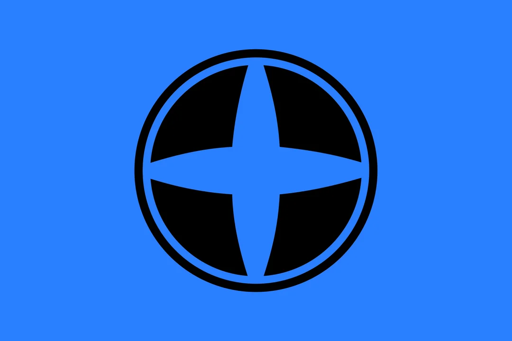
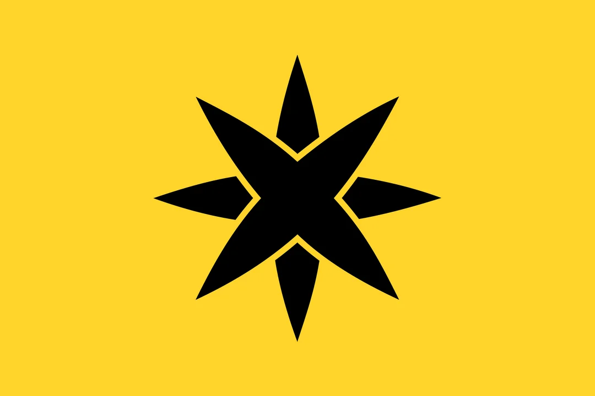
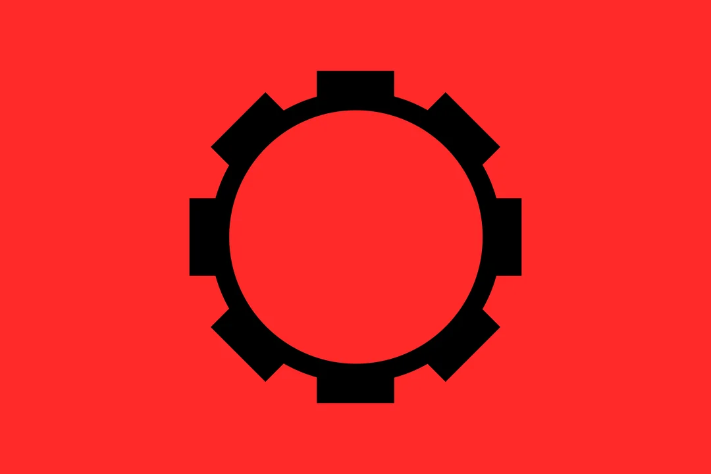

Strategy Guide
Building an Efficient Deck
One of the most important things to keep in mind is the size of your deck. Buying a lot of cheap cards might be powerful early game, but as you start to acquire more expensive cards, you won't be able to play them very often. Some methods to prevent an uncycleable deck is to aquire machine cult cards early on, focus on buying cards that let you draw a card, and using scrap abilities to acquire more expensive cards.
Coins are essential to be able to increase the strength of your deck. The earlier you increase your coin production, the more value your efforts will contribute to winning. Acquiring trade progression cards near the end of the game will decrease your chances of winning because you can't play your high-damage cards as often.
You can't win without combat. At some point, you need to get it. It's useful to get a little bit of combat early on to take care of bases, but prioritizing trade and scrapping is often a great strategy. Once you start focusing on acquiring high-combat cards, if you focus consistently on it the rest of the game it will increase your likelihood of achieving victory.
In normal games you start with 50 authority, and it's difficult to get much more. Many trade federation cards generate authority and bases can be useful to slow the rate your opponent can deplete your authority. You if your goal is to take out your opponent as quickly as possible, going for authority may not be the best option. However, if your goal is to buy expensive cards and build a strong deck in the end game, authority can buy you the time you need.
What Order to Acquire Factions
Each faction are strong in different situations. Many cards that are powerful in the beginning of the game are not effective later on. Machine Cult cards are the best example of this. This faction plays the long game, and if you start acquiring them halfway into the game, they're not going to be nearly as useful. Blob and Star Empire cards can be bought at any time, but once you start acquiring them in bulk, you should focus on dealing damage the rest of the game. Trade Federation cards are best at the very beginning of the game, because trade is only good for improving your deck. It won't matter if you're about to lose in a few turns.
  Best Utilize Faction Bonuses
Of all of the cards in each deck, around 70% of them have ally abilities. This means if you stick to one or two factions, your cards are going to have much more power and you'll have a significantly better chance of winning. A card that seems to be the second best option might be worth purchasing if it increases your consistency of drawing multiple cards of the same faction per turn.
Countering Your Opponent
If your opponent starts out acquiring cards with scrapping and coins, they're playing the long game. You can purchase all damage heavy cards and try to deplete their authority before they become to strong. If you find you're opponent is doing this to you, you can buy defensive trade federation cards or bases to survive longer. Notice your opponent isn't buying any cards with combat? They won't be able to destroy any bases you acquire.